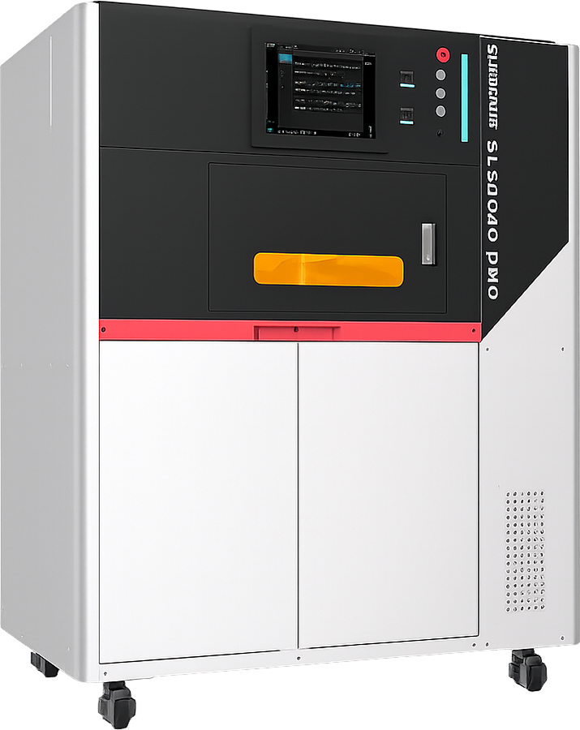

Sans supports
Géométries impossibles en FDM, canaux internes, charnières imprimées en une seule pièce.
Le frittage laser transforme de la poudre de nylon en pièces solides et fonctionnelles, sans aucun support. C'est la technologie des pièces techniques et des petites séries.

Une fine couche de poudre de nylon est étalée dans la chambre de la machine.
Un laser fait fondre la poudre uniquement là où la pièce doit exister.
On recommence jusqu'en haut. La poudre non fondue soutient la pièce : aucun support à retirer.
Envoyez votre fichier : nous confirmons que le SLS est le bon choix, ou nous vous orientons vers une autre technologie.
Rendu interactif · glissez pour faire tourner

Polyvalent · Résistant · Économique
Voir la fiche →
Reproductible · Industriel · Série
Voir la fiche →
Polyvalent · Résistant · Flexible
Voir la fiche →
Biobased · Souple · Biocompatible
Voir la fiche →
Rigide · Léger · Structurel
Voir la fiche →
Antistatique · Protecteur · Électronique
Voir la fiche →
Rigide · Stable · Thermique
Voir la fiche →
Ignifuge · Certifié · Aéronautique
Voir la fiche →
Alimentaire · Certifié · Détectable
Voir la fiche →
Flexible · Élastique · Absorbant
Voir la fiche →FDM, SLS ou SLA (résine) : quelle technologie d'impression 3D choisir ? Comparatif précision, matériaux, coût et délai, par O&D Impression 3D à Liège.
Ouvrir la fiche →Comparatif · 02Fibre de carbone ou fibre de verre pour votre Nylon PA12 ? Comparatif rigidité, poids et résistance aux chocs, par O&D Impression 3D à Liège.
Ouvrir la fiche →Oui pour une pièce unique. Mais dès 5–10 pièces, le prix unitaire devient compétitif car on sature la chambre avec plusieurs pièces simultanément.
Pas nativement. Pour des applications étanches, nous appliquons une imprégnation époxy qui scelle les pores. Testée avant livraison.
Le PA12 brut est blanc-grisâtre. Teinte par immersion pour des couleurs uniformes (noir, bleu, rouge). Peinture pistolet pour couleurs vives ou dégradés.
±0.2–0.3mm pour les petites cotes, ±0.5mm pour les grandes dimensions. Pour les pièces d'assemblage critiques, prévoir un jeu de 0.3–0.5mm.
Oui, c'est l'un des grands avantages du SLS. Charnières, rotules, engrenages — imprimés assemblés, prêts à l'usage. Jeu fonctionnel minimum : 0.5mm entre surfaces.
PA12 standard, PA11 bio-sourcé, TPU SLS flexible et PA12-GF (renforcé fibres de verre). Chaque matériau a des propriétés mécaniques spécifiques adaptées à des usages différents.
Quand la géométrie est trop complexe pour le FDM et que la résistance mécanique prime sur la précision de surface.
Géométries impossibles en FDM, canaux internes, charnières imprimées en une seule pièce.
PA12 fritté : 45–50 MPa en traction, 15–20% d'élongation. Résistance aux huiles et solvants.
Mécanismes articulés, engrenages, snap-fits — imprimés assemblés sans post-assemblage.
La chambre SLS contient des dizaines de pièces simultanément. Prix unitaire dégressif dès 5–10 pièces.
Teinte, vibro-finition, Shot-peening. Les pièces SLS acceptent tous les traitements de surface.
PA12, PA11 bio-sourcé, TPU SLS flexible, PA12-GF renforcé verre.
Un laser CO₂ fait fondre sélectivement de la poudre de Nylon couche par couche. La poudre non frittée sert naturellement de support — aucun support à retirer.
Des pièces SLS pour des applications industrielles et commerciales.
Bras en PA12 SLS avec canaux de câblage internes imprimés directement dans la pièce.
50 pièces en PA12 SLS pour fixation de ski. Résistance au froid et cycle thermique validé.
120 boîtiers en PA12 avec clips intégrés. Teinte noire, finition professionnelle.
Le SLS offre une liberté de design unique — à condition de respecter quelques règles de conception spécifiques.
Le SLS permet des géométries impossibles en FDM grâce à l'absence de supports. Mais quelques règles s'appliquent : épaisseur de paroi minimale de 0.8mm, espacement minimum de 0.3 à 0.5mm entre deux surfaces en mouvement, et les cavités fermées doivent avoir un ou plusieurs orifices de drainage pour permettre l'évacuation de la poudre non frittée.
Notre technicien analyse votre fichier avant production et vous signale tout point problématique. Si nécessaire, nous proposons des modifications mineures pour garantir le succès de l'impression sans compromettre la fonctionnalité.
La chambre SLS peut contenir plusieurs dizaines de pièces simultanément. Plus la chambre est bien remplie, plus le coût unitaire ést faible. Pour les clients ayant plusieurs références à produire, nous optimisons le placement des pièces dans la chambre pour maximiser la densité de fabrication et minimiser le coût par pièce.
Cette optimisation peut représenter une économie de 20 à 40% par rapport à des impressions individuelles. Contactez-nous avec l'ensemble de vos références pour un devis guichet unique optimisé.
Envoyez votre fichier 3D ou décrivez votre besoin : devis instantané avec fichier, devis personnalisé sous 24 h.